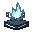

REPTILIAN WARFARE / PLAYER GUIDE
Frostback
High shoulders, heavy armor and a powerful front-leg stomp.

Frostback Altar
Found in frozen cave settlements. Their placement is slightly less frequent in 3.7.1.
Abilities
- Left-click to rear up and stomp with the front legs. This is an active melee attack, not a walking stomp.
- Hold B to breathe frost. Repeated hits stack Chilled and slow enemies more, up to five stacks.
- Turn eligible ordinary terrain into brittle ice, then shatter it. Ice that breaks or melts disappears permanently; the original terrain does not grow back.
- Step over obstacles with the same growth-scaled step-up ability as Ocean Beast.
Frostback trades speed for defense. Its front stomp can break fortified walls once it reaches the required stage.
Feeding and eye
Feed near ice, packed ice or blue ice. Its eye protects against freezing and Chilled and lets successful melee and ranged attacks chill enemies. It grants visible plates, not frost breath.